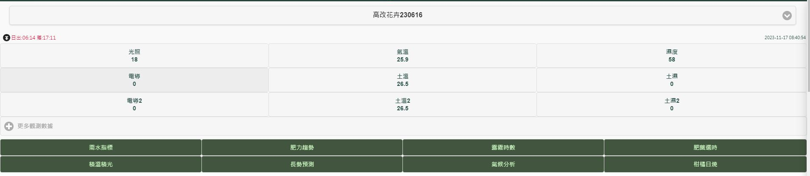
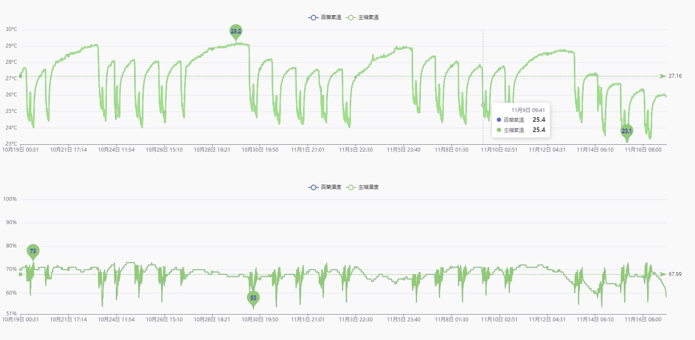

農業物聯網設備介紹
廠商：
安吉氣象決策公司
設備名稱：
農園天眼站
通訊方式：
NB-IoT或4G
應用情境：
安吉氣象決策公司的物聯網設備，可依需求採用NB-IoT或4G通訊方式， 並可搭配不同的感測器（例如空氣溫、濕度、光照、土壤、雨量、風速、風向、攝像頭等），進行環境資訊收集。
可選用電池搭配太陽能板或市電供電方式，較不受電源及網路限制。
資料傳輸至天氣探長平台，可以使用手機或電腦連上系統平台查看農地即時影像、環境資料及歷史數據， 並提供作物長勢預測及農地氣象預警功能。

